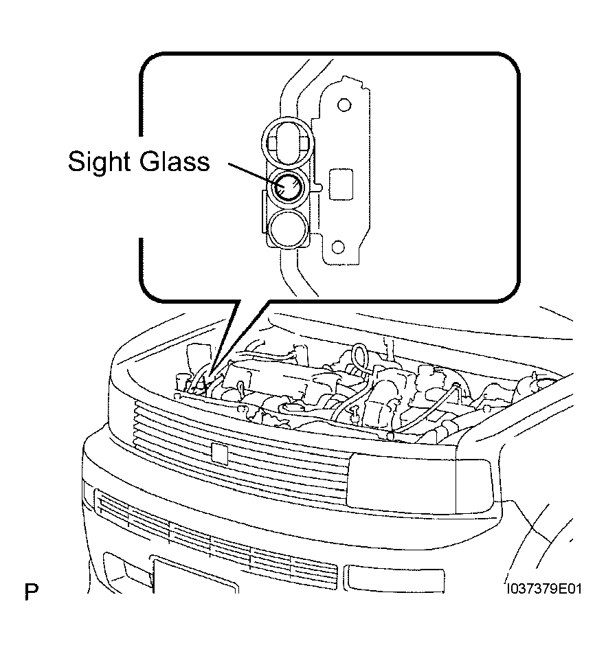
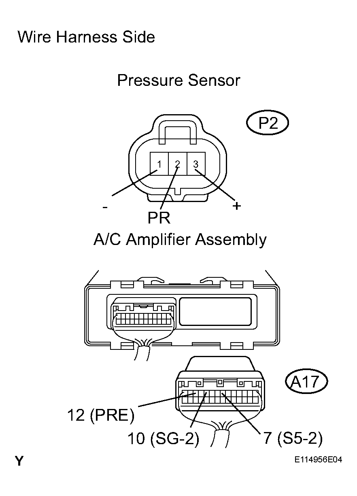
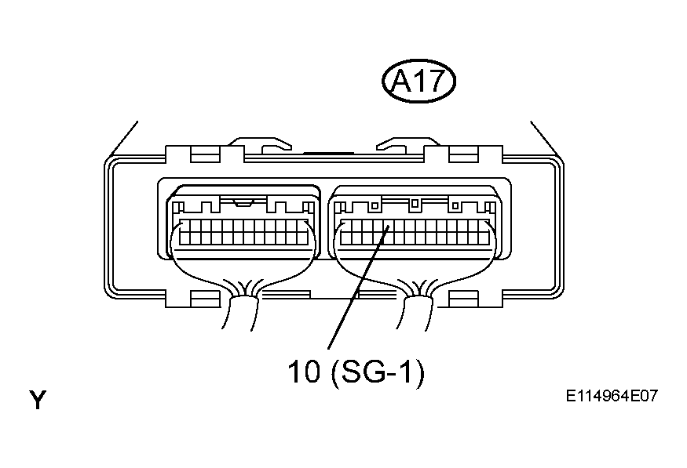
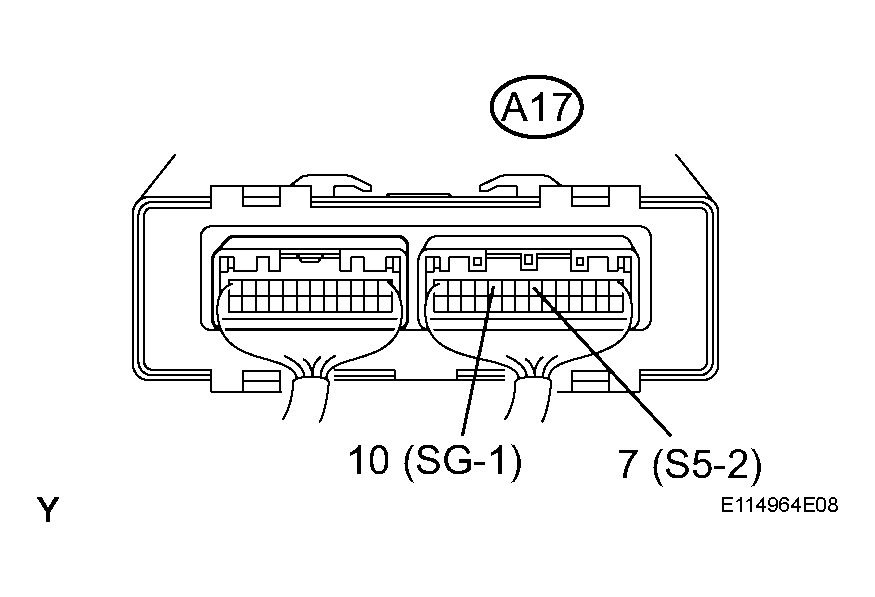

Inspection Procedure
- CHECK REFRIGERANT VOLUME
- Check the sight glass on the liquid tube sub-assembly.
Test conditions:
- Engine is running at 1,500 rpm.
- Blower switch is at HI.
- A/C switch is ON.
- Air mix control knob is at the MAX COOL position.
- Doors are fully open.

Courtesy of © TOYOTA, LICENSE AGREEMENT TMS1002ITEM SYMPTOM CHARTItem Symptom Amount of Refrigerant Corrective Procedures 1 Bubbles visible Insufficient* - Check for gas leakage and repair if necessary
- Add refrigerant until bubbles disappear
2 No bubbles visible Empty, insufficient or too much Refer to items 3 and 4 3 No temperature difference between compressor inlet and outlet Empty or nearly empty - Check for gas leakage with gas leak detector and repair if necessary
- Add refrigerant until bubbles disappear
4 Considerable temperature difference between compressor inlet and outlet Correct or too much Refer to items 5 and 6 5 Immediately after A/C is turned OFF, refrigerant becomes clear Too much - Drain or discharge refrigerant
- Bleed air and supply proper amount of purified refrigerant
6 Immediately after A/C is turned OFF, refrigerant foams and then becomes clear Correct - HINT:
*: If the ambient temperature is higher than usual but cooling is sufficient, bubbles in the sight glass are permissible.
NG: CHARGE REFRIGERANT
OK : Go to Next Step
- Check the sight glass on the liquid tube sub-assembly.
- READ VALUE OF INTELLIGENT TESTER (PRESSURE SENSOR)
- Start the engine.
- Turn the A/C switch ON.
- Check the DATA LIST for proper functioning of the pressure sensor.
A/C amplifier assembly
DATA LISTItem Measurement Item /
Display (Range)Normal Condition Diagnostic Note REG PRESS SENS
(Regulator pressure sensor)Regulator Pressure Sensor /
Min.: 0 kgf/cm2G,
Max.: 38.19 kgf/cm2GActual regulator pressure is displayed Open in circuit: 32.5 kgf/cm2G (continuous, regardless of actual temperature)
Short in circuit: 0 kgf/cm2G (continuous, regardless of actual temperature)OK:
The display is as specified in the normal condition.
Result
RESULTResult Proceed to NG A OK (when troubleshooting according to Problem Symptoms Table) B OK (when troubleshooting according to DTC Chart) C
B: PROCEED TO NEXT CIRCUIT INSPECTION SHOWN IN PROBLEM SYMPTOMS TABLE
C: CHECK INTERMITTENT PROBLEM
A: Go to next step
- CHECK WIRE HARNESS (PRESSURE SENSOR - AIR CONDITIONING AMPLIFIER)
- Disconnect the P2 sensor connector.
- Disconnect the A17 amplifier connector.
- Measure the resistance of the wire harness side connectors.
Standard resistance
TESTER CONNECTION AND SPECIFIED CONDITION CHARTTester Connection Specified Condition P2-3 (+) - A17-7 (S5-2) Below 1 Ω P2-2 (PR) - A17-12 (PRE) Below 1 Ω P2-1 (-) - A17-10 (SG-1) Below 1 Ω
NG: REPAIR OR REPLACE HARNESS AND CONNECTOR

Courtesy of © TOYOTA, LICENSE AGREEMENT TMS1002OK : Go to Next Step
- CHECK AIR CONDITIONING AMPLIFIER ASSEMBLY
- Remove the A/C amplifier but do not disconnect the connectors.
- Measure the resistance of the connector.

Courtesy of © TOYOTA, LICENSE AGREEMENT TMS1002Standard resistance
TESTER CONNECTION AND SPECIFIED CONDITION CHARTTester Connection Specified Condition A17-10 (SG-1) - Body ground Below 1 Ω
NG: REPLACE AIR CONDITIONING AMPLIFIER ASSEMBLY
OK : Go to Next Step
- CHECK AIR CONDITIONING AMPLIFIER ASSEMBLY (S5 VOLTAGE)
- Remove the A/C amplifier but do not disconnect the connectors.
- Measure the voltage of the connector.

Courtesy of © TOYOTA, LICENSE AGREEMENT TMS1002Standard voltage
TESTER CONNECTION AND SPECIFIED CONDITION CHARTTester Connection Condition Specified Condition A17-7 (S5-2) - A17-10
(SG-1)Ignition switch ON 4.5 to 5.5 V Ignition switch OFF Below 1 V
NG: REPLACE AIR CONDITIONING AMPLIFIER ASSEMBLY
OK : Go to Next Step
- CHECK PRESSURE SENSOR
- Install the manifold gauge set.
- Connect the three 1.5 V dry cell batteries' positive (+) lead to terminal 3 and the negative (-) lead to terminal 1. Then connect the voltmeter's positive (+) lead to terminal 2 and the negative (-) lead to terminal 1. Measure the voltage.
OK:
The voltage changes according to refrigerant pressure, as shown in the graph.
HINT:
The graph shows the relationship between pressure and output voltage when the pressure sensor is used with an input voltage of 5 V. When using three 1.5 V dry cell batteries connected in series, the output voltage will be 90% of the output voltage in the 5 V input voltage case.
NG: REPLACE LIQUID TUBE SUB-ASSEMBLY
OK : Go to Next Step
REPLACE AIR CONDITIONING AMPLIFIER ASSEMBLY